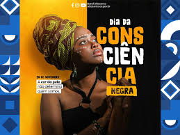

"Para unificar o povo preto em torno de sua luta contra séculos de escravização e após a abolição da escravatura no Brasil, passou-se a pensar em uma forma de unir a população preta e conscientizá-la de sua cultura, da luta diária das pessoas pretas e do valor de ser preto. O objetivo é ainda parecido com o da negritude, mas vai além, pois indica às pessoas pretas que, apesar de elas não ocuparem muitos lugares de destaque na sociedade dominada por pessoas brancas, elas merecem destaque por sua intensa luta"Intelectuais e políticos brancos também endossaram o movimento. No dia 13 de maio de 1888, não conseguindo mais resistir à pressão interna do movimento abolicionista e nem à pressão externa promovida principalmente pela Inglaterra, a Princesa Isabel assinou a Lei Áurea, abolindo a escravatura em nosso país.
A trajetória dos ex-escravos libertos não foi fácil. Eles não tiveram direito à terra nem a qualquer tipo de indenização. Começaram a viver à margem da sociedade, iniciando a difícil trajetória da população preta após a abolição em nosso país. Mesmo compondo uma comunidade em sua maioria pobre e marginalizada, a cultura negra, com suas ricas raízes africanas, continuou se desenvolvendo.
Em 1971, o professor, escritor, pesquisador e militante negro Oliveira Silveira organizou um grupo de estudo e apreciação da cultura e da literatura negra em Porto Alegre com outras pessoas interessadas no assunto. O grupo propôs a criação de uma data comemorativa que simbolizasse a união e a luta do povo negro. O dia 20 de novembro foi escolhido por ser o dia da morte de Zumbi dos Palmares, personalidade considerada símbolo de luta e resistência contra a escravidão.
O grupo sofreu certa perseguição, pois, na ocasião de seu nascimento, o Brasil vivia o auge dos chamados anos de chumbo da Ditadura Militar. No entanto, os movimentos sociais que atuavam em defesa da população negra cresciam cada vez mais em nosso país. Em 1978, inclusive, foi criado no Brasil o Movimento Negro Unido (MNU).
Em 1988 foi promulgada a atual Constituição Federal de nosso país, apelidada pelo deputado Ulysses Guimarães como Constituição Cidadã. Ela recebeu esse carinhoso apelido por ser resultado de uma intensa consulta popular de vários setores da sociedade, representados por deputados e por movimentos sociais que puderam participar das sessões de criação e votação do texto constitucional. Um dos princípios estabelecidos na constituição é a igualdade e o veto à discriminação por qualquer motivo, inclusive racial.
Em 1989 foi promulgada a Lei n.º 7.716, de 5 de janeiro de 1989, que dispõe contra o preconceito racial, tornando a discriminação racial, de cor, de religião ou nacionalidade um crime passível de punição penal.
Entre embates judiciais, leis e a luta dos movimentos, o sentimento de empoderamento e a necessidade de se celebrar a africanidade cresciam cada vez mais, aumentando a necessidade de se criar uma lei que determinasse a data proposta na década de 1970 como uma data comemorativa."
Veja mais sobre "Consciência negra" em: https://brasilescola.uol.com.br/sociologia/consciencia-negra.htm."